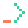

<!doctype html>
<html lang="en"><head><meta charset="utf-8"><meta name="viewport" content="width=device-width,initial-scale=1"><title>Transparent lower third · MoltSets</title><link rel="stylesheet" href="../base.css"><link rel="stylesheet" href="../components.css"><link rel="stylesheet" href="./compositions.css"><link rel="stylesheet" href="../motion/motion.css"><style>html,body{background:transparent}</style></head><body><!-- Generated from templates/scenes.mjs. Edit that source, then build. -->
<main class="ms-art lower-third-layout transparent" style="--art-w:1920px;--art-h:1080px" data-template="lower-third"><div data-enter="200"><aside class="ms-lower-third"><div><h2>Adam Robinson</h2><p>MoltSets</p></div></aside></div></main><script src="../tokens.js"></script><script src="../motion/runtime.js"></script></body></html>
